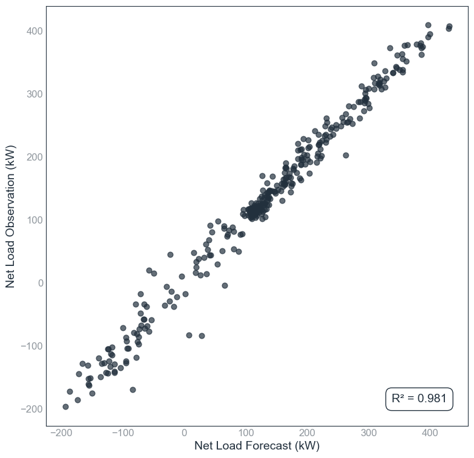
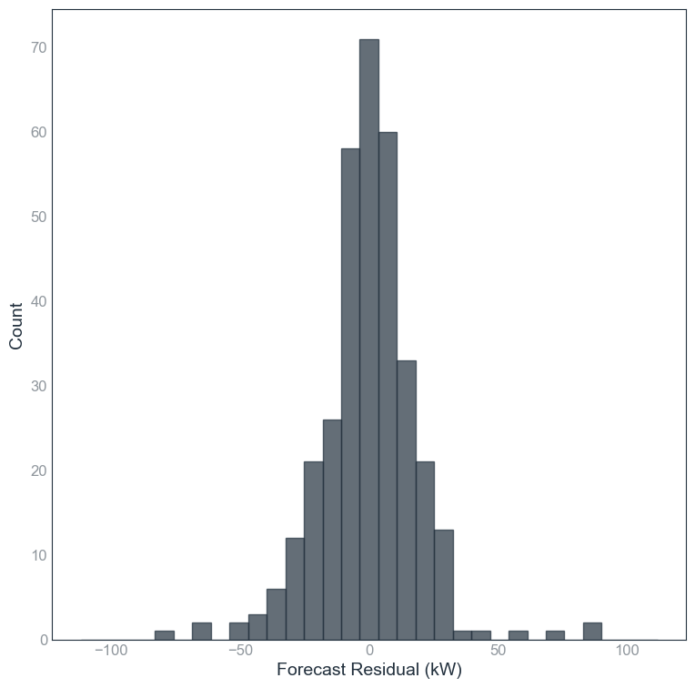

User Input¶
Suppose we perform a simple test using the inputs below, which should take less than 1 minute in the run_experiment.ipynb file:
# 1. RUN CONFIG
%run "../config/config.ipynb"
# 2. SETUP FORECAST PROBLEM AND MODEL SPECIFICATION (USER TO INPUT)
# FORECAST PROBLEM
dataset = ds0
forecast_horizon = fh1 # fh1 = 30 minutes ahead, fh9 = 2 days ahead
# MODEL SPECIFICATION
model_name = m6
hyperparameter_no = 'hp1'
# 3. RUN EXPERIMENT
run_experiment(dataset, forecast_horizon, model_name, hyperparameter_no)
Output¶
The tool generates the following outputs.
| Name | Type | Description |
|---|---|---|
E00001_cv_test/ |
Folder | Time series of observation, forecast, and residual for each cross-validation split |
E00001_cv_train/ |
Folder | Time series of observation, forecast, and residual for each cross-validation split |
E00001_cv1_plots/ |
Folder | Plots for the first cross-validation fold: time plot, scatter plot, residual plot, histogram |
E00001_models/ |
Folder | Saved models used or generated during the experiment |
E00001_a1_experiment_result.csv |
File | Accuracy (cross-validated test n-RMSE), stability, and training time |
E00001_a2_hyperparameter.csv |
File | Hyperparameters used for each model |
E00001_a3_cross_validation_result.csv |
File | Detailed results for each cross-validation split |
The file a1_experiment_result.csv summarises the results, including the cross validated nRMSE & its standard deviation
| experiment_no | exp_date | dataset_no | dataset | dataset_freq_min | dataset_length_week | forecast_horizon_min | train_pct | test_pct | model_no | hyperparameter_no | model_name | hyperparameter | runtime_ms | train_RMSE | train_RMSE_stddev | test_RMSE | test_RMSE_stddev | train_nRMSE | train_nRMSE_stddev | test_nRMSE | test_nRMSE_stddev |
|---|---|---|---|---|---|---|---|---|---|---|---|---|---|---|---|---|---|---|---|---|---|
| E00001 | 15/09/2025 | ds0 | test | 30 | 10 | 30 | 0.9 | 0.1 | m6 | hp1 | m6_lr_hp1 | num_features: 50 | 201.769185 | 17.33 | 0.206421 | 17.7066 | 1.82726 | 2.98206 | 0.03552 | 3.04686 | 0.31443 |
The file a3_cross_validation_result.csv provides the detailed cross-validation (CV) results, from CV1 to CV10.
Experiment Metrics¶
| # | runtime_ms | train_MBE | train_MAE | train_RMSE | train_MAPE | train_MASE | train_fskill | train_R2 | test_MBE | test_MAE | test_RMSE | test_MAPE | test_MASE | test_fskill | test_R2 | train_nRMSE | test_nRMSE |
|---|---|---|---|---|---|---|---|---|---|---|---|---|---|---|---|---|---|
| 1 | 193.2564 | 0 | 12.208 | 17.122 | 27.366 | 0.422 | 55.471 | 0.988 | -0.1804 | 13.278 | 19.679 | 22.808 | 0.459 | 43.531 | 0.981 | 2.9463 | 3.3863 |
| 2 | 224.8719 | 0 | 12.337 | 17.495 | 27.347 | 0.423 | 54.817 | 0.988 | -0.1443 | 12.332 | 16.346 | 18.905 | 0.423 | 49.006 | 0.987 | 3.0105 | 2.8127 |
| 3 | 251.0867 | 0 | 12.361 | 17.477 | 22.314 | 0.433 | 54.031 | 0.987 | 0.3318 | 11.965 | 16.321 | 60.409 | 0.419 | 58.022 | 0.989 | 3.0074 | 2.8084 |
| 4 | 174.1974 | 0 | 12.401 | 17.573 | 28.635 | 0.434 | 53.775 | 0.987 | -0.8563 | 11.654 | 15.427 | 13.623 | 0.408 | 60.346 | 0.992 | 3.0239 | 2.6546 |
| 5 | 232.7249 | 0 | 12.281 | 17.020 | 22.091 | 0.435 | 54.565 | 0.988 | 1.2783 | 12.536 | 20.375 | 70.615 | 0.444 | 53.147 | 0.986 | 2.9287 | 3.5060 |
| 6 | 173.2767 | 0 | 12.322 | 17.467 | 28.530 | 0.436 | 53.491 | 0.987 | -0.6225 | 12.436 | 16.567 | 12.690 | 0.440 | 61.224 | 0.991 | 3.0056 | 2.8508 |
| 7 | 233.0346 | 0 | 12.171 | 17.004 | 26.500 | 0.427 | 55.250 | 0.988 | 0.8754 | 13.685 | 20.516 | 27.756 | 0.480 | 47.485 | 0.981 | 2.9260 | 3.5303 |
| 8 | 212.3849 | 0 | 12.286 | 17.390 | 26.759 | 0.428 | 54.516 | 0.988 | -0.7814 | 12.809 | 17.191 | 23.091 | 0.447 | 53.467 | 0.985 | 2.9924 | 2.9581 |
| 9 | 157.8457 | 0 | 12.330 | 17.417 | 28.242 | 0.435 | 53.965 | 0.988 | -1.0170 | 12.308 | 16.923 | 10.919 | 0.434 | 58.189 | 0.989 | 2.9970 | 2.9120 |
| 10 | 165.0126 | 0 | 12.269 | 17.335 | 28.311 | 0.421 | 55.265 | 0.988 | 1.0148 | 12.840 | 17.721 | 11.193 | 0.441 | 44.110 | 0.979 | 2.9829 | 3.0493 |
| mean | 201.7692 | 0 | 12.2966 | 17.330 | 26.6095 | 0.4294 | 54.5146 | 0.9877 | -0.0102 | 12.5843 | 17.7066 | 27.2009 | 0.4395 | 52.8527 | 0.986 | 2.9821 | 3.0469 |
| stddev | 33.2319 | 0 | 0.0693 | 0.2064 | 2.4352 | 0.00591 | 0.6866 | 0.00048 | 0.8405 | 0.5983 | 1.8273 | 21.106 | 0.02059 | 6.5729 | 0.00447 | 0.03552 | 0.31443 |
Below are some plots on the test set:
 |
 |
|---|---|
| Figure 1: Observation vs Forecast (Time Plot) | Figure 2: Observation vs Forecast (Scatter Plot) |
 |
 |
|---|---|
| Figure 3: Residuals Over Time | Figure 4: Residual Histogram |